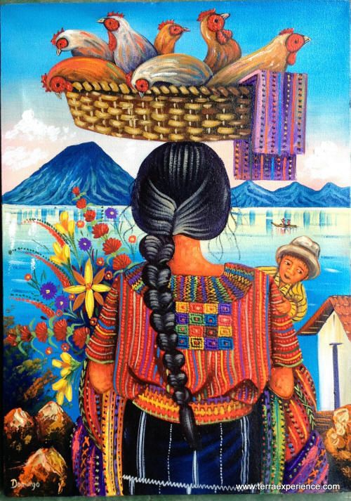
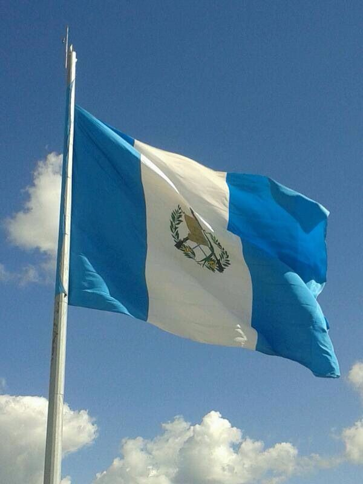
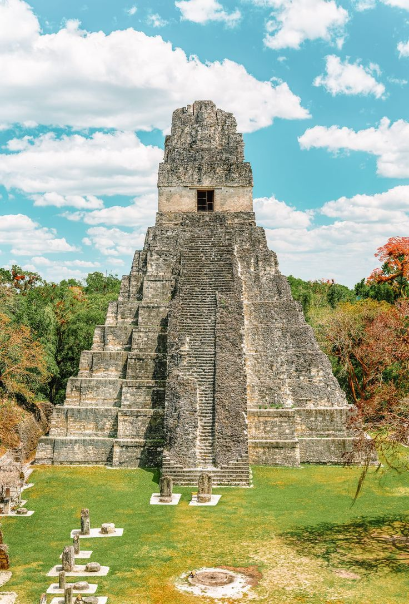
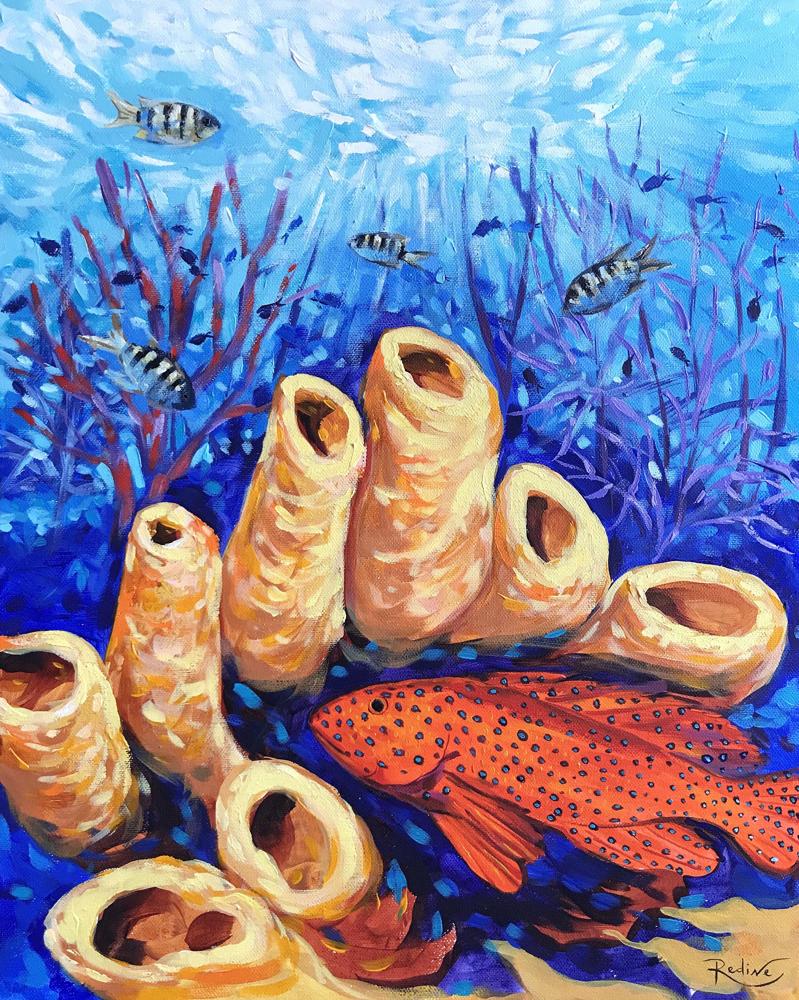

El Salvador
El Salvador es una pequeña nación de América Central. Es conocida por sus playas en el océano Pacífico, los sitios de surf y el paisaje montañoso. Su Ruta de las Flores es un camino serpenteante que pasa por plantaciones de café, bosques tropicales con cascadas y ciudades como Juayúa, con sus festivales gastronómicos cada fin de semana, junto con Ataco, donde hay alegres murales. La capital, San Salvador, con volcanes como un espectacular telón de fondo, tiene varios museos y el Teatro Naciona
Guatemala



Guatemala, un país de América Central al sur de México, tiene volcanes, bosques tropicales y antiguos sitios mayas. La capital, Ciudad de Guatemala, cuenta con el imponente Palacio Nacional de la Cultura y el Museo Nacional de Arqueología y Etnología. Antigua Guatemala, al oeste de la capital, contiene edificios coloniales españoles preservados. El lago de Atitlán, formado en un enorme cráter volcánico, está rodeado de campos de café y aldeas.
Honduras

Honduras es un país de América Central con costas en el mar Caribe al norte y en el océano Pacífico al sur. En el bosque tropical cerca de Guatemala, el antiguo sitio ceremonial maya de Copán tiene jeroglíficos tallados en piedra y estelas, altos monumentos de piedra. En el mar Caribe, se encuentran las Islas de la Bahía, un destino para el buceo que forma parte de la Barrera de Coral Mesoamericana